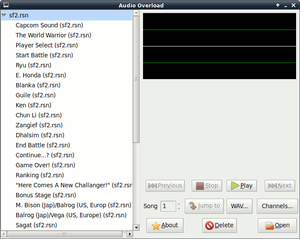

Audio Overload
Dieser Artikel wurde für die folgenden Ubuntu-Versionen getestet:
Dieser Artikel ist mit keiner aktuell unterstützten Ubuntu-Version getestet! Bitte diesen Artikel testen und das getestet-Tag entsprechend anpassen.
Zum Verständnis dieses Artikels sind folgende Seiten hilfreich:
Audio Overload  ist ein spezieller Audioplayer – einzig für exotische Audioformate von älteren Spielkonsolen und Computersystemen (Chiptunes). In der aktuellen Version 2.0 unterstützt die Software nativ 33 Audio- sowie fünf Archivformate. Letzteres erspart das Entpacken der typischerweise komprimierten Dateien.
ist ein spezieller Audioplayer – einzig für exotische Audioformate von älteren Spielkonsolen und Computersystemen (Chiptunes). In der aktuellen Version 2.0 unterstützt die Software nativ 33 Audio- sowie fünf Archivformate. Letzteres erspart das Entpacken der typischerweise komprimierten Dateien.
Gängige Audioformate wie MP3 sollen und können mit Audio Overload nicht abgespielt werden. Der Player bietet nur die allernötigsten Funktionen – darunter jedoch die Möglichkeit, die exotischen Formate in WAVE umzuwandeln. Bedauerlicherweise ist Audio Overload weder freie Software noch Open Source. Wer keine unfreien Programme auf dem Rechner haben will, findet in den Paketquellen andere Audioplayer, die mit Chiptunes umgehen können (z.B. Audacious oder qmmp). Leider arbeiten diese stellenweise nicht so akkurat wie Audio Overload; dies gilt besonders für Player, die auf Multimedia-Frameworks wie GStreamer zurückgreifen.
Installation¶
Audio Overload befindet sich weder in den offiziellen Paketquellen noch gibt es ein PPA. Auf der Homepage werden binäre Ausgaben für 32- und 64-Bit-Linuxsysteme angeboten.
Hinweis!
Fremdsoftware kann das System gefährden.
Das jeweilige Archiv muss heruntergeladen, entpackt[1] und die enthaltene Datei ao ausführbar gemacht werden[2]. Anschließend kann Audio Overload über diese Datei gestartet[3] werden, da die wenigen Abhängigkeiten des Programms bei einer Desktop-Installation von Ubuntu normalerweise schon erfüllt sind.
Benutzung¶

Nachdem die Dateien über Open geladen wurden, werden die enthaltenen Lieder im linken Bereich des Fensters aufgelistet. Chiptunes werden oftmals gesammelt in Containerdateien aufbewahrt, entweder nativ (z.B. bei .nsf) oder sie werden im Nachhinein in diese Struktur gebracht (z.B. bei .spc). Über den Button WAV... kann das ausgewählte Lied in das Wave-Format umgewandelt werden. Einige Dateiformate gliedern die einzelnen "Instrumente" der Chips in festgelegte Kanäle. Mittels Channels... können diese bei Bedarf de-/aktiviert werden. Die restlichen Schaltflächen sollten selbsterklärend sein.
Unterstützte Formate¶
Audioformate¶
| Unterstützte Audioformate | |
| Kürzel | System |
| AHX | Commodore Amiga |
| AY | Amstrad CPC / Spectrum ZX / Atari ST |
| COP | Sam Coupe |
| DSF | Sega Dreamcast |
| GBS | Nintendo Gameboy |
| GSF | Nintendo Gameboy Advance |
| GYM | Sega Megadrive/Genesis |
| HES | PC Engine |
| HVL | Commodore Amiga |
| IMF | Verschiedene Apogee Spiele |
| KSS | MSX |
| MDX | Sharp X68000 |
| MOD | Commodore Amiga |
| NSF | Nintendo NES |
| NSFE | Nintendo NES (enhanced tags) |
| ORC | TRS-80 Orchestra-90 |
| PSF | Sony PlayStation |
| PSF2 | Sony PlayStation II |
| QSF | Capcom QSound |
| RAW | AdLib |
| ROL | AdLib Visual Composer |
| S3M | GUS / SoundBlaster |
| S98 | NEC PC-98 |
| SAP | Atari XL/XE |
| SCI | Verschiedene Sierra-Spiele |
| SNDH | Atari ST |
| SPC | Super Nintendo |
| SPU | Sony Playstation |
| SSF | Sega Saturn |
| VGM | Sega Master System/Game Gear |
| VTX | Spectrum Vortex Tracker |
| WSR | Bandai WonderSwan/Wonderswan Color |
| YM | Amstrad CPC/Spectrum ZX/Atari ST |
Links¶
Zophar's Domain
– Seite über Emulation mit einigen Chiptune-SammlungenSNES Music
– Datenbank mit Super-Nintendo-ChiptunesProject2612
– Datenbank mit Sega Megadrive-/Genesis-/MegaCD-/32X-ChiptunesHVSC
– Sammlung von SID-Chiptunes (C64 etc.)The MOD Archive
– Datenbank mit Tracker-Musik (Amiga etc.)
- Erstellt mit Inyoka
-
 2004 – 2017 ubuntuusers.de • Einige Rechte vorbehalten
2004 – 2017 ubuntuusers.de • Einige Rechte vorbehalten
Lizenz • Kontakt • Datenschutz • Impressum • Serverstatus -
Serverhousing gespendet von